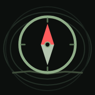

Perímetro sem observação: o esquadrão atira às cegas (metade do dano). Coloque alguém de vigília.
Supressão e Economia se anulam · Abrigo e Vigília Total também
Estradas desimpedidas na retaguarda. Entregas em ritmo regular.
A trincheira se desgasta sozinha (mais na chuva forte) e com artilharia e invasões. Estragada, as invasões ferem mais e o abrigo protege menos. Em 20% ou menos ela ROMPE: o abrigo deixa de proteger e uma invasão pode matar todo o esquadrão. Quem está na Manutenção repara; o Engenheiro repara bem mais rápido.
Assumimos a defesa da trincheira Alpha em Komona. O vento sopra frio do Norte. Devemos resistir 30 dias até a chegada do exército principal.
A água congelou esta noite. O Soldado Silva apresenta febre alta.

Defenda a trincheira por 30 dias.
Saiu uma atualização do jogo. Sua partida está salva e continua de onde parou depois de atualizar.
FrontLine — jogo de Ruan e Douglas.
Símbolos militares do mapa: milsymbol, de Måns Beckman (spatialillusions.com) — licença MIT.
Efeitos sonoros: gerados com ZzFX, de Frank Force — licença MIT.
Ícones: game-icons.net, de Lorc, Delapouite e colaboradores — licença CC BY 3.0.
Explosões, fumaça, clarões e vapor: "Smoke Particle Assets", de Kenney (kenney.nl) — licença CC0.
Medalhas: Kenney (kenney.nl) — licença CC0 (domínio público).
Músicas: trilhas de guerra de domínio público (CC0); detalhes em assets/music/LICENSE.md.
Interface: Tailwind CSS (MIT), Font Awesome Free (ícones CC BY 4.0) e fontes Google (OFL).